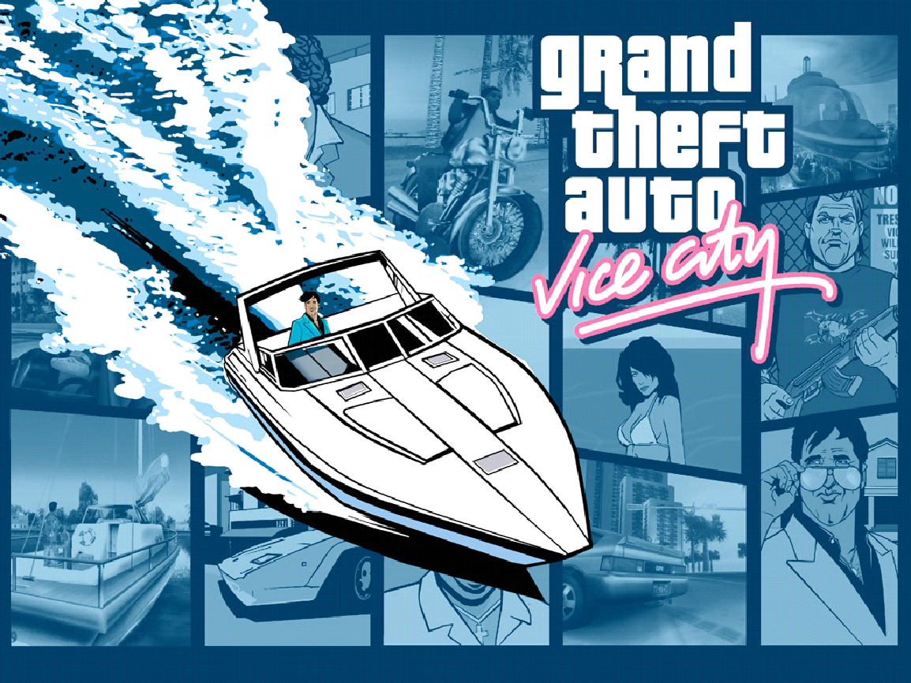

4. GTA Vice City (2002)

É o quarto título da série Grand Theft Auto e foi lançado em 2002 para PlayStation 2. O jogo é ambientado em
1986 na cidade fictícia de Vice City, que é baseada em Miami, Flórida.
O jogador controla o personagem principal Tommy Vercetti, um membro de uma família mafiosa que foi acabado de
cumprir pena de prisão. Tommy é enviado a Vice City para ajudar a expandir os negócios da família, mas acaba se
envolvendo em uma série de problemas e conflitos com outras gangues e figuras do crime.
O jogo é conhecido por sua jogabilidade aberta, que permite ao jogador explorar a cidade e realizar uma ampla
variedade de atividades, incluindo roubar carros, participar de missões de rápido fogo e cometendo crimes. Vice
City também introduziu um sistema de propriedade, que permite ao jogador comprar e gerenciar negócios e
propriedades.
O jogo foi recebido com elogios pela crítica e tornou-se um sucesso de vendas, vendendo mais de 20 milhões de
cópias em todo o mundo. Ele foi seguido por Grand Theft Auto: San Andreas, que foi lançado em 2004.
|
|
|